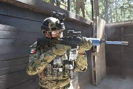

1. Cursos de Infiltración Aérea.
Operaciones Aeromóviles.
Básico de Paracaidismo estático.
Doblado y mantenimiento de paracaídas.
Maestro de Salto estático.
Infiltración en Caída libre a Gran Altura.
de Salto e Instructor de Caída Libre a Gran Altura.
Curso de Instructor de Rapell.
Curso de Soga rápida.
2. Cursos de Operaciones Especiales.
Buceo de Combate (regulado por ESCOSUB).
Comandos de IM.
Fuerzas Especiales.
3. Cursos de Operaciones de Seguridad
Contra narcotráfico.
Seguridad a Instalaciones Estratégicas.
Apoyo a las Fuerzas de Seguridad.
Seguridad a Funcionarios.
Localización y Neutralización de Explosivos.
4. Cursos de las Técnicas de Tiro.
Tiro Básico de Combate.
Tiro de Combate.
Tiro de Reacción.
Francotiradores.
Datos curioisos:
El examen Fisico consiste en abdominales, planchas, natacion 50 metros (realizandose en la Poza Castelli con salto al mar), atletismo 1500 metros y salto largo sin impulso. Barras(Hombres) y suspencion en Barras(Mujeres).
Los ejercicios que se llevan a cabo, destacan los de mitigacion de desastres y ayuda humanitaria, operaciones de guerra de superficie; antisubmarina, antiaerea, operaciones anfibias, expedicionarias y de reconocimiento, ademas de entrenamientos de cooperacion con oportunidad de fomentar la formacion de alto mando.
La infanteria de marina tuvoun elemento conocido como "El Marino Loko", ya que al momento de atrrapar a un integrante del CDN, lo vestia de mujer para humillarlo.
Existen canciones que habalan sobre la vida de algunos marinos.
Las fuerzas militares mexicanas son exepcionalmente eficaces paramatar. Y ademas tienen en su haber un altonumero de muertes en sus enfrentamientos.
"SON LETALES, SON UNA MAQUINA PARA MATAR" asi el periodico de New your times describe al ejercito y a la marina de mexico.
En combates urbanos los ejercitos matan a una persona por 4 heridos, en mexico en la llamada "guerra contra el narco" los militares matan a 8 personas por cada herido, los marinos matan a 30.